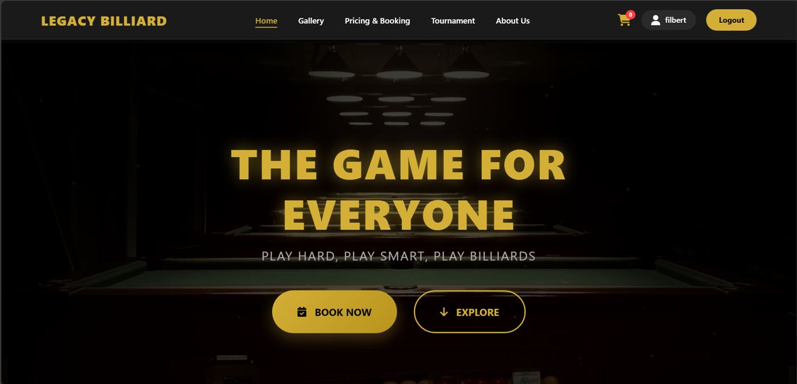
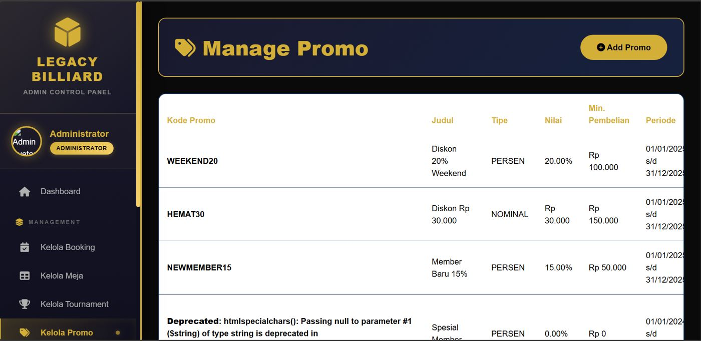
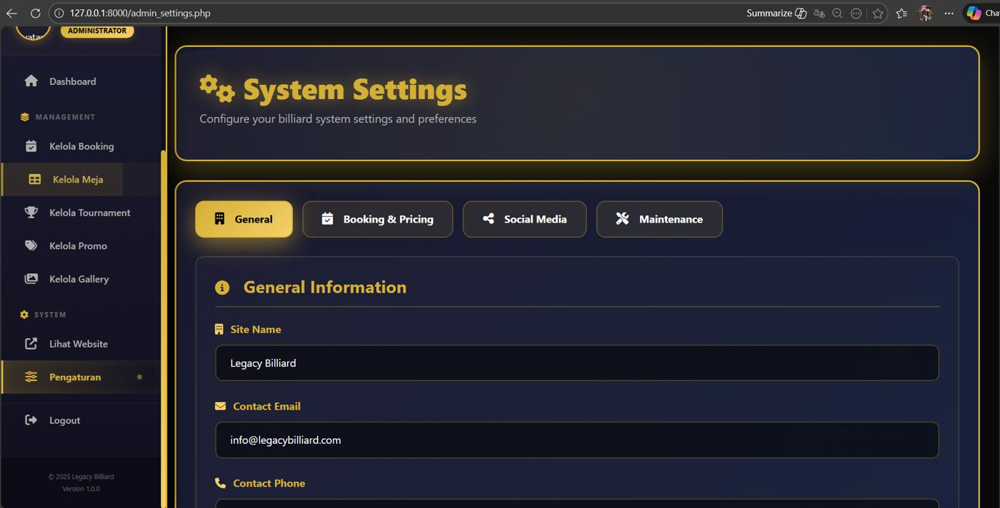

★ UnggulanSistem & Web
Legacy Billiard: dari database sampai website reservasi
Database, aplikasi Java, dan website reservasi Laravel untuk satu kasus yang sama.
MySQLPHP · LaravelJavaHTML / CSS / JSERDWireframe & site diagram
Lihat detail →Legacy Billiard: dari database sampai website reservasi
Banyak tempat billiard masih mencatat booking, waktu bermain, dan pembayaran secara manual, sehingga antrean menumpuk di jam ramai. Kasus yang sama kami kembangkan di tiga mata kuliah berbeda, dari rancangan database, aplikasi Java, sampai website reservasi meja dan turnamen yang utuh.
01 · Database System
Desain database
Normalisasi dari nota manual, ERD/EERD, tabel MySQL, view dan advanced query.
Peran sayaLogika backend dan integrasi database untuk alur booking meja dan pembayaran.
02 · OOP
Aplikasi Java
Booking meja, membership, pesan snack, dan pembayaran dengan class, inheritance, linked list, dan stack untuk riwayat pesanan.
Peran sayaMemegang kode program aplikasi (ditulis dengan bantuan AI) dan memahami alur sistemnya dari booking sampai pembayaran.
03 · Web Design & Development
Website Laravel
Website reservasi meja dan turnamen dengan panel admin: booking, meja, promo, galeri, dan pengaturan.
Peran sayaMembangun halaman Sign Up, Kelola Promo, dan Pengaturan.
MySQLPHP · LaravelJavaHTML / CSS / JSERDWireframe & site diagram

